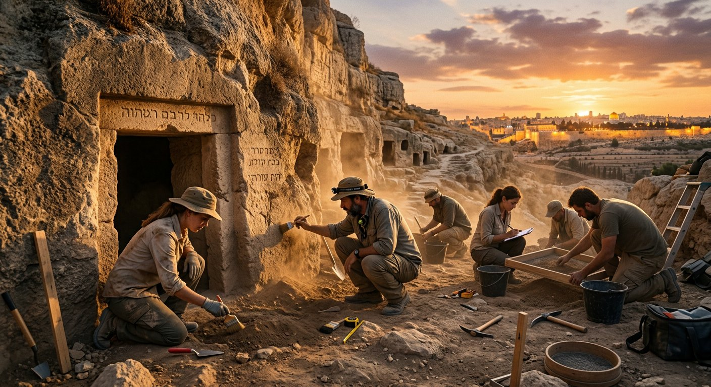
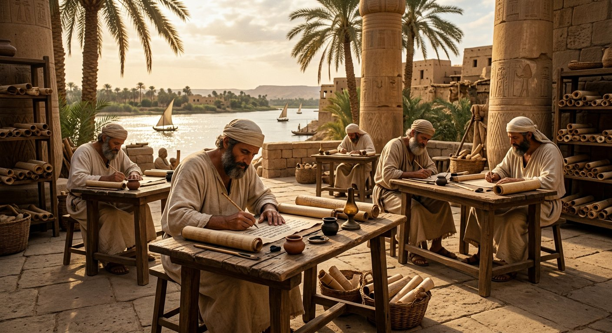

De la Torah aux amulettes d'argent de Ketef Hinnom : la naissance de l'Écriture sainte,
mille cinq cents ans avant notre ère, et les preuves archéologiques qui éclairent
l'aube de la transmission biblique.
≈ 1500 – 500 av. J.-C.
Canonique — Ancien Testament
Jérusalem · Égypte · Proche-Orient
VIIe siècle av. J.-C. · Jérusalem
Les Rouleaux d'Argent de Ketef Hinnom
Document
2 amulettes d'argent
Datation
≈ 620–580 av. J.-C.
Découverte
1979–1980, G. Barkay
Conservation
Musée d'Israël, Jérusalem
Dans la nécropole de Ketef Hinnom, au sud de Jérusalem, l'archéologue
Gabriel Barkay met au jour en juillet 1979 deux minuscules amulettes d'argent roulées,
placées comme offrandes funéraires dans des tombes de l'âge du fer. Datées du
VIIe siècle avant notre ère, elles sont antérieures de deux siècles
aux plus anciens manuscrits de Qumrân et de près d'un millénaire au plus vieux manuscrit
massorétique connu.
Déroulées avec une infinie précaution par les conservateurs, elles révèlent des lettres
hébraïques gravées au poinçon — et, parmi elles, le tétragramme divin יהוה.
Elles portent la bénédiction sacerdotale de Nombres 6:24-26 : ce sont
aujourd'hui les plus anciens mots de la Bible jamais découverts, un message de
protection adressé par Jéhovah à chaque génération.
Canonique — Ancien TestamentPlus ancien texte biblique connu
Les deux amulettes d'argent déroulées, photographiées en laboratoire de conservation.
Musée d'Israël, Jérusalem.
« Que Jéhovah te bénisse et te garde.
Que Jéhovah fasse luire sa face sur toi et qu'il te fasse grâce.
Que Jéhovah lève sa face vers toi et te donne la paix. »
Nombres 6:24-26 — attesté par les amulettes de Ketef Hinnom
Note sur le tétragramme. Sur les amulettes, le nom divin apparaît dans sa
forme consonantique יהוה (YHWH),
sans voyelles, comme dans les plus anciens manuscrits hébreux. Conformément à la convention
du musée, il est traduit ici par Jéhovah. Les amulettes portent en outre une
formulation développée de bénédiction (« Béni soit Jéhovah, le protecteur… ») qui s'appuie
sur plusieurs passages des Psaumes et des Nombres.
Écouter la découverte
Le plus vieux message de Jéhovah
Les amulettes étaient portées en pendentif ou déposées avec les défunts : la bénédiction
de Jéhovah accompagnait le vivant comme le mort.
Deux mille six cents ans plus tard, ses mots sont toujours lus — désormais dans le monde entier.

La nécropole de Ketef Hinnom, au sud de Jérusalem, où furent découvertes les amulettes.
≈ 1450–1410 av. J.-C. · Le Sinaï et Canaan
Moïse et la Torah — l'origine de l'Écriture sainte
Document
Le Pentateuque (Torah)
Auteur selon la tradition
Moïse
Langue
Hébreu ancien
Statut
Canonique — AT
Selon la tradition biblique elle-même, Moïse consigne entre -1450 et -1410
les cinq livres qui ouvrent la Bible : la Genèse, l'Exode, le Lévitique, les Nombres et le
Deutéronome. Ensemble, ils forment la Torah — le Pentateuque — socle sur
lequel repose tout l'édifice scripturaire. Moïse y apparaît comme un lettré formé à la
cour égyptienne (Actes 7:22), dans un monde où l'écriture est déjà un art millénaire.
Car Moïse n'écrit pas dans le vide : l'écriture hiéroglyphique a alors plus de mille ans
d'âge, le code de Hammourabi est gravé dans la pierre à Babylone, et les alphabets
cananéens — ancêtres directs de l'hébreu — circulent déjà dans tout le Levant. Des
supports variés existent : papyrus, cuir, poterie, pierre. L'archéologie confirme ce
que la Bible affirme : au deuxième millénaire avant notre ère, on écrivait
abondamment dans la région.
La Torah n'est donc pas une légende tardive mise par écrit, mais un texte ancien ancré
dans son époque. Transcrite ensuite sans relâche par les scribes d'Israël — jusqu'aux
massorètes de Tibériade (galerie II) — elle ouvre la plus longue chaîne de transmission
documentée de l'histoire humaine.
« Et Dieu parla toutes ces paroles… » (Exode 20:1) — la remise de la Loi sur le Sinaï.
Écouter le récit
Moïse et la naissance de l'Écriture sainte

Des scribes hébreux transcrivent les premiers textes de la Loi — dans un monde où l'écriture
est déjà universelle, du papyrus égyptien aux tablettes de l'Ébla.
L'épreuve historique
Quand la terre confirme le récit
Ces documents extérieurs à la Bible, découverts par l'archéologie, éclairent le contexte
des récits bibliques et attestent la profondeur historique de la transmission.
≈ 2300 av. J.-C. · Syrie
Les tablettes d'Ébla
Mises au jour en 1975 à Tell Mardikh, près de 20 000 tablettes d'argile composent l'une
des plus anciennes bibliothèques connues. Plusieurs nomment des villes que de nombreux
spécialistes rapprochent de la plaine du Jourdain citée en Genèse 14:2 —
Sodome, Gomorrhe, Adma et Zeboïm — confirmant la vraisemblance géographique du récit.
≈ 1300 av. J.-C. (copie) · Égypte
Le papyrus Ipuwer
Conservé à Leyde, ce papyrus poétique décrit l'Égypte en proie au chaos : le fleuve
est de sang, la poussière envahit tout, les serviteurs deviennent maîtres. Des
parallèles frappants avec les plaies d'Égypte de l'Exode — sans qu'il
s'agisse pour autant d'un compte rendu direct.
« Voici : le fleuve est de sang. Les gens en
boivent. L'on se détourne de l'eau, car on la trouve détestable. »
« Le fleuve est de sang… »
Papyrus Ipuwer, 2:5-6 — traduction française
≈ 1208 av. J.-C. · Égypte
La stèle de Mérenptah
Découverte à Thèbes en 1896, cette stèle du pharaon Mérenptah porte la
première mention extrabiblique du nom d'Israël. L'Égypte y célèbre sa
victoire sur Canaan — et nomme Israël parmi les vaincus : la nation existe déjà,
reconnue des grandes puissances, au XIIIe siècle avant notre ère.
« Israël est dévasté, sa semence n'est plus. »
« Israël est dévasté, sa semence n'est plus. »
Stèle de Mérenptah, ligne 27 — traduction française
Note de méthode. Chaque source est présentée avec
ce qu'elle établit réellement : des parallèles, des confirmations de contexte, des attestations
de noms et de lieux. Le musée distingue toujours la preuve directe de la corroboration — c'est
ce qui rend la démonstration d'autant plus solide.